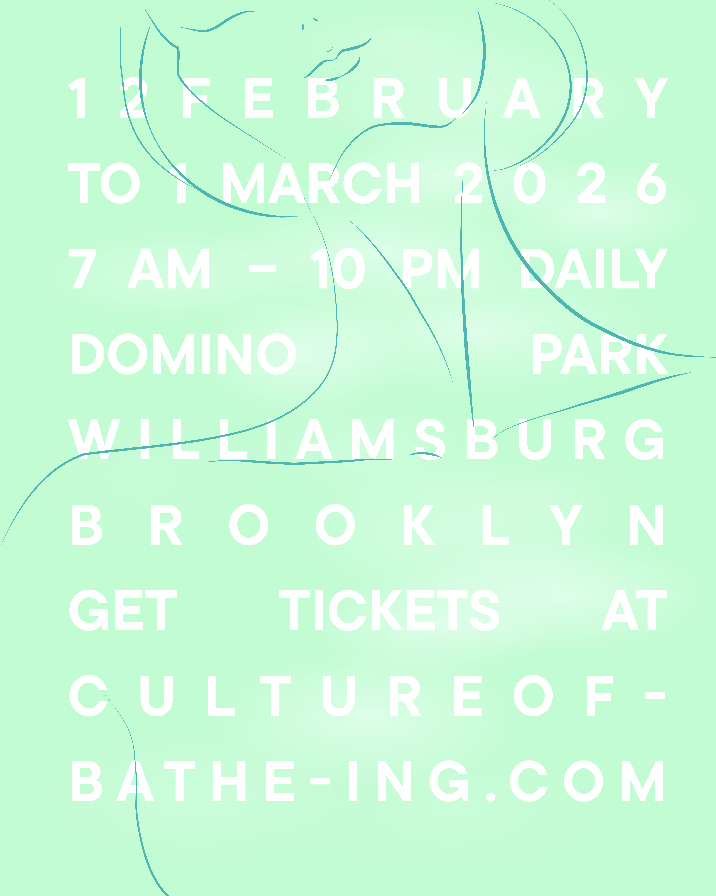
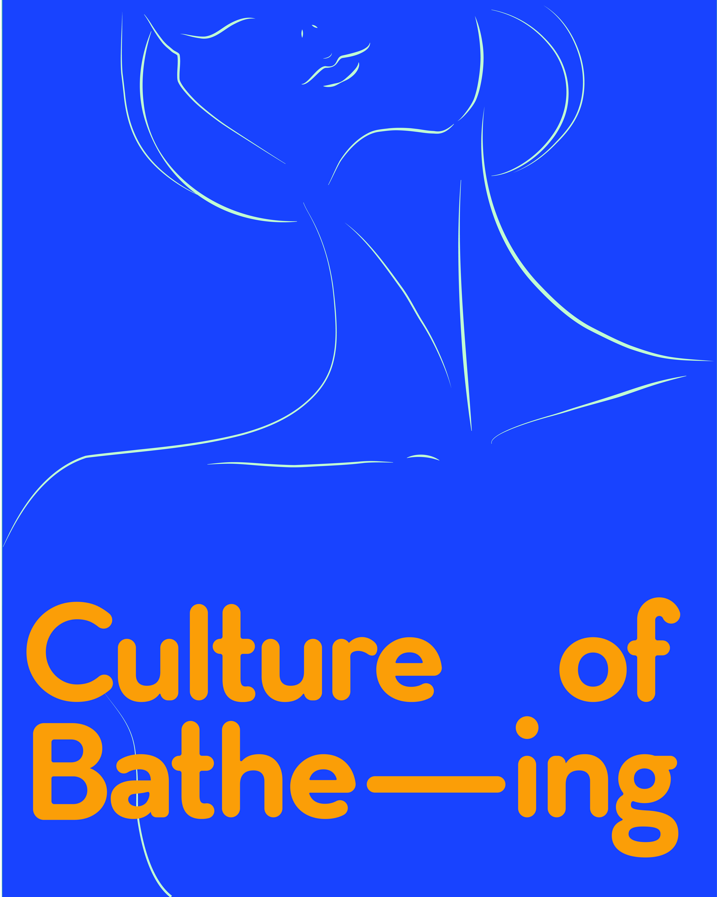
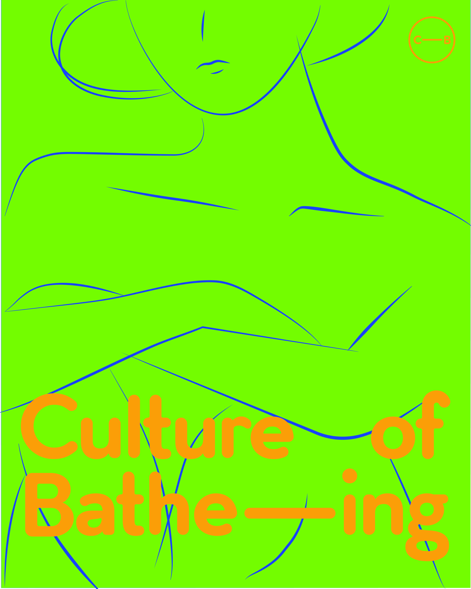
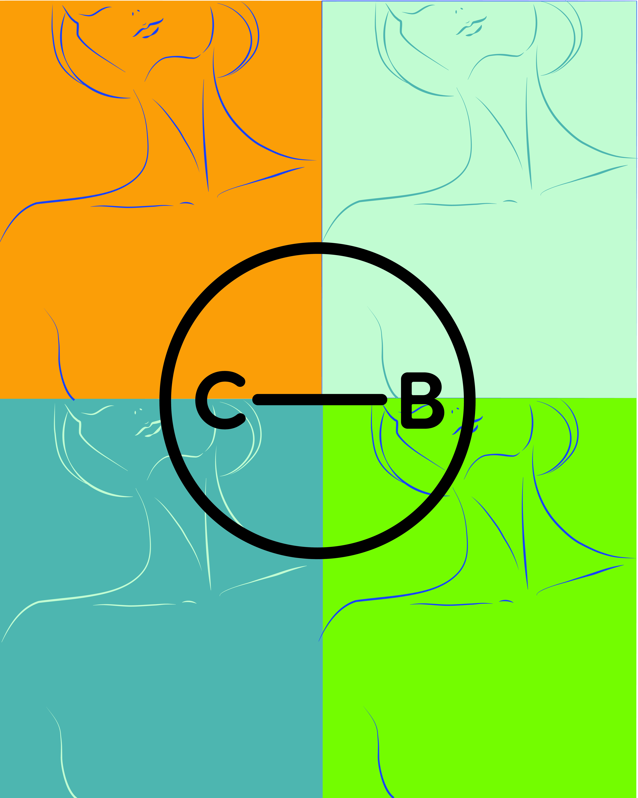

culture of bathe-ing
Sauna festival poster series. Four posters for Culture of Bathe-ing at Domino Park, Williamsburg, Brooklyn — a winter sauna event running February to March 2026. Each poster develops a different visual language around the same identity: line drawings of bodies at rest, a restrained palette of yellow, green, blue, and off-white, and bold type set large.
Role: designer · poster design · illustration
2026 · New York
cultureofbathe-ing.com →